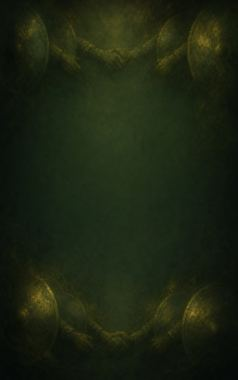

Brothers in Arms C
Steady everyone close by: they stand firm and shrug off pain.
| Rank | Chakra | Cooldown | Class level |
|---|---|---|---|
| C | 14 | 15 s | 3 |

Technique trees › Universal taijutsu
5 techniques · Taijutsu tab
Unlocks through World of Naruto's own trees, a gene, a build choice or a profession.
Steady everyone close by: they stand firm and shrug off pain.
| Rank | Chakra | Cooldown | Class level |
|---|---|---|---|
| C | 14 | 15 s | 3 |
You and the allies close by cover each other: harder to hit.
| Rank | Chakra | Cooldown | Class level |
|---|---|---|---|
| C | 14 | 15 s | 5 |
Patch up one ally in the heat of battle.
| Rank | Chakra | Cooldown | Class level |
|---|---|---|---|
| C | 14 | 15 s | 6 |
Lead the allies close by into the fray: faster and harder-hitting.
| Rank | Chakra | Cooldown | Class level |
|---|---|---|---|
| B | 24 | 25 s | 9 |
You and the allies close by lock shields: much tougher.
| Rank | Chakra | Cooldown | Class level |
|---|---|---|---|
| B | 24 | 25 s | 11 |